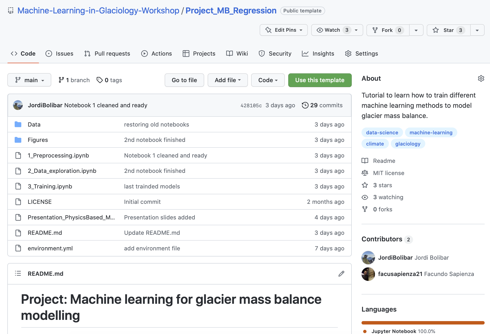
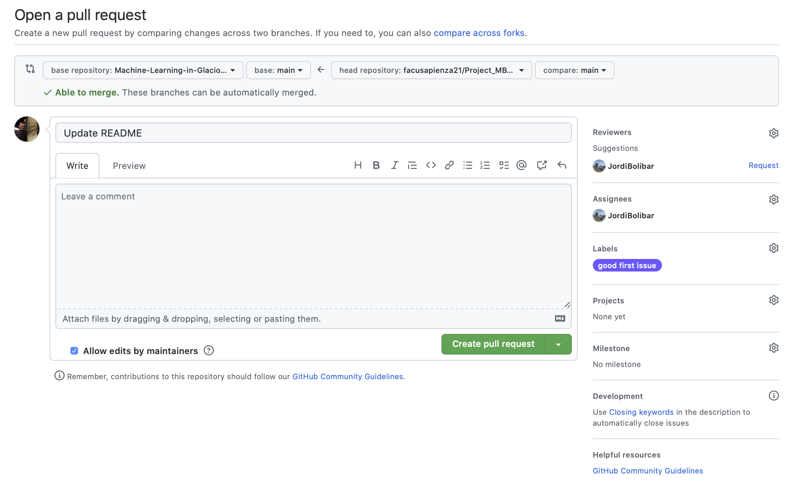

An Interactive Git Tutorial
Contents
An Interactive Git Tutorial#
Contents created by Fernando Pérez and Facundo Sapienza for the course Collaborative and Reproducible Data Science.
In this notebook, you will find all the needed information to work collaboratively using version control with git.
Learning goals:
Introduction to version control and git workflows
Credential management
Working with collaborators, pull requests
First things first: git must be configured before first use#
The minimal amount of configuration for git to work without pestering you is to tell it who you are. You should run a version of these commands in your shell:
git config --global user.name "Ozzy Osbourne"
git config --global user.email "master.of.reality@metal.edu"
And while we’re at it, we also turn on the use of color, which is very useful
git config --global color.ui "auto"
Introduction#
This is a companion notebook with code to follow the visuals of this presentation. This visialization shows a basic workflow of actions that you will encounter when working with git.
What is the difference between git and GitHub?
Answer.
Initialization#
You can initialize a new repository by creating a new directory (mkdir <directory name>) from the terminal, moving in to the new folder (cd <directory name>) and initializing the repository with git init. This will create the repository structure inside that folder that will allow us to version control the files we connect with git.
If instead you have an exisiting repository, you can directly clone it or fork it to your GitHub.
clone#
When cloning a repository, you are getting a local version of an existing repository. When making changes (commits and push) to this repository, you will change the original repository you have cloned. To clone an exisiting repository,
git clone <repository url>
where <repository url> can be found directly in the repository GitHub page:

fork#
Forking an exisiting repository means to create a copy of such repository under your GitHub accounts. In this way, there are two different repositories and this allows you to make changes to your copy of the repository without affecting the integrity of the original repository. This is useful and recommendable when working collaborativelly in a project. Integrating your changes to the original repository can be done by doing a pull request, which we will explore later in this tutorial. In order to fork an exisiting repository, go to the GitHub page of the repository and in the upper right corner you can find the buttom Fork

and then create a copy under your personal GitHub account

Making changes#
In order to keep track of the changes you make to the files in the repositrory, you need to notify git about which files and which changes do you want to keep track of. The workflow for doing this consists in three commands you execute from the command line
git add market_list.txt
git commit -m'I need milk and cereals'
git push
A few comments about these commands
add#
We need to specify the names of the files we want to keep changes of. You can instead use git add --all or git add * for adding all the files in the repository, but this is ussualy bad practice and dangerours in general (unless this is your first git add).
commit#
In the commit above, we used the -m flag to specify a message at the command line. If we don’t do that, git will open the editor we specified in our configuration above and require that we enter a message. By default, git refuses to record changes that don’t have a message to go along with them (though you can obviously ‘cheat’ by using an empty or meaningless string: git only tries to facilitate best practices, it’s not your nanny).
push#
These command is no really necessary to execute after each commit. When create a commit message, you notify git about changes in some files. This changes are keep recorder in your local version of the repository (the one you have access thought the machine you are using). When you git push, you sincronize the local version of your repository with the remote version of the repository, that is, the version storaged online in GitHub. Usually, you do a push when you want your changes to be reflected in GitHub, for example, when you want to share the changes with your collaborators or when you finish your day of work and want to be sure that a remote copy of you work is keep safe.
Remote repositories
A remote repository: is a pointer to another copy of the repository that lives on a different location. This can be simply a different path on the filesystem or a server on the internet. For this discussion, we’ll be using remotes hosted on the GitHub.com service, but you can equally use other services like BitBucket or Gitorious as well as host your own. You can see the repote repositories sincronozed with you reposotory using
git remote -vor instead by looking at all the branches of you reposotory, enither local or remote, withgit branch -all.
Branches#
A branch is simply a label for the current commit in a sequence of ongoing commits. There can be multiple branches alive at any point in time; the working directory is the state of a special pointer called HEAD. Once new commits are made on a branch, HEAD and the branch label move with the new commits:

Why to work in different branches?
Working in different branches allows you to develop code without altering the main structure and code of the repository. Branches can be merged and the changes you implemented in a new branches can be incorporated to the main code. Having exploratory code in a different branch allows you to explore ideas without affecting the integrity of the code at the same time you can version control these changes.
The basic git command to move between branches is git switch. This allows you to both create a new branch (adding the flag -c) and move to it and comeback to the main branch.
git switch -c dev
Once we want to comeback to the main branch, we can simply use
git switch main
In order to merge two branches, we first move to the branch where we want to incorporate the changes and then we use
git merge dev -m'merging great new developments'
Once you are done with a branch, you can simply delete it with git branch --delete dev.

Solving conflicts with Jupyter notebooks#
While git is very good at merging, if two different branches modify the same file in the same location, it simply can’t decide which change should prevail. At that point, human intervention is necessary to make the decision. Git will help you by marking the location in the file that has a problem, but it’s up to you to resolve the conflict.
TO BE COMPLETED
Pull Request#
When merging two different branches in git, we are working in the same repository. However, when working in developing code we usually have different forks of the same repository which live under different locations (eg, you personal GitHub account). In order to incorporate changes from one repository to another we use GitHub’s pull request. Doing this is a very simple procedure and you can find a step-by-step of how to do this in (this post)[https://docs.github.com/en/pull-requests/collaborating-with-pull-requests/proposing-changes-to-your-work-with-pull-requests/creating-a-pull-request].

Once created, you can add further comments about the changes that the pull request will incorportate. At this point, you can also assign project member to review and approved your changes.

Code reviews#
The main advantage of pull request in collaborative projects is that it helps review incoming changes in the main repository. This is normally done through a code review, which is normally done by a separate user who can provide a critical eye on the changes being pushed. During the code review, comments can be added, and individual (lines or file) changes can be accepted or discarded in order to help decision making. The author of the pull request then can perform further changes in new commits, update the pull request and iterate through this process until everyone is happy.
Another important part of this process, which will not be covered in this material, is the fact that pull requests allow triggering integration tests in a repository, which allow tracking any breaking changes into the codebase.
Recovering past versions#
Sometimes we make accidental changes to some of the files in a repository, or maybe we just want to come back to a previous version. In any case, it is easy to restore or even recover old versions of files that have been track in a commit message.
Restoring old versions#
You can restore previous version of such file by using git checkout <commit> <filename>. You will need to specify the stage at which you want to restore the file. You can do this by looking at the log of the repository (git log, git slog, git log --all, …): this is why commit messages are so important!
Observation: you can also see old versions of your files directly on GitHub, in case you need to inspect previous versions of files.
Recovering deleted files#
Depending if you made a commit message after deleting the file, you may need to use one of the following commands:
If you haven’t commit your changes, you can recover the file just by coming back to the previous snapshot of the repository by using
git checkout HEADNow, if you make a commit after removing the changes, you need to do a little bit more of work. Use
git slog -- <filename>to see all the history associated to the file you removed and then usegit checkout <commit> -- <filename>to recover it
Some more git commands#
git log: What has been commited so far?git diff: What have I changed?git mvandgit rm: moving and removing files